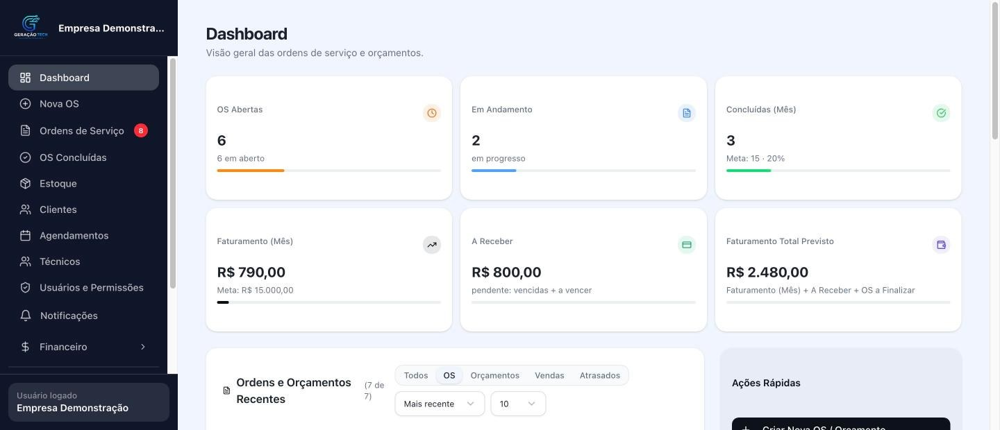
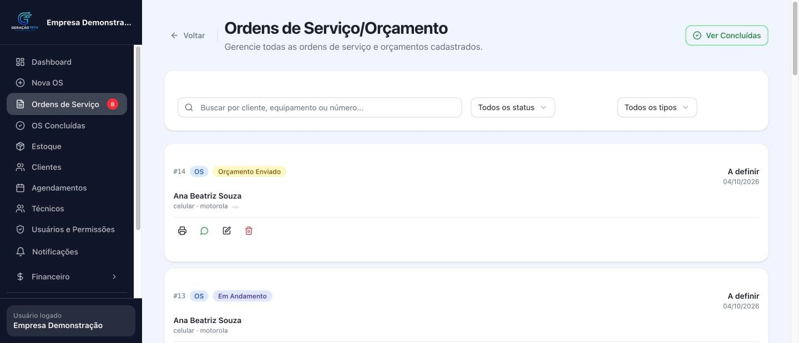
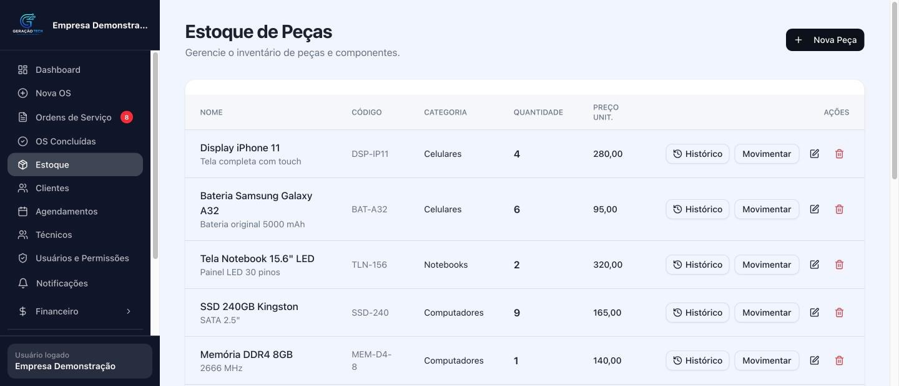

Sua assistência organizada do orçamento à entrega.
Abra e acompanhe ordens de serviço, controle peças e caixa e deixe de procurar informações em planilhas e conversas espalhadas. Com o Geração Tech, sua equipe acompanha cada atendimento em um só sistema.
Sem cartão de crédito. Sem cobrança automática. Você escolhe se quer assinar depois do teste.Mais controle de cada atendimento. Menos tarefa repetida.
Quando orçamento, ordem de serviço, estoque e financeiro ficam em lugares diferentes, acompanhar os reparos exige procurar e conferir informação várias vezes. No Geração Tech, os dados do atendimento ficam reunidos para você saber o que entrou, o que foi aprovado e o que ainda falta fazer.
Enquanto você cuida dos reparos, o sistema ajuda a organizar ordens, avisos e movimentações do negócio.
Veja como funciona antes de decidir.
Explore telas reais do Geração Tech e veja como abrir uma ordem de serviço, acompanhar o atendimento e consultar o estoque.
Veja na prática: ordem de serviço e estoque
Dois vídeos rápidos, direto do sistema.
Prefere testar com os dados do seu negócio? Crie seu ambiente grátis por 7 dias.
Telas do sistema
Telas reais do ambiente de demonstração.



Escolha o plano para o tamanho da sua operação.
Todos os planos incluem backup automático diário. O teste grátis dura 7 dias e não exige cartão. A cobrança começa somente se você escolher um plano.
Black Friday até 27/11 para novos assinantes: plano Completo mensal a R$ 119,90 por 12 meses, uma economia de R$ 360,00 no primeiro ano (depois de 27/11, o mensal volta a R$ 149,90). Assinar com a promoção
Essencial
Para organizar as ordens, o estoque e o caixa.
- Ordens de serviço e orçamento com link de aprovação
- Entrada do aparelho com checklist e assinatura
- Clientes, estoque, caixa e despesas
- 2 usuários (administrador + técnico)
- Até 100 OS por mês
- Sem suporte: use o manual do sistema
Profissional
Para automatizar os avisos e acompanhar mais atendimentos.
- Tudo do Essencial
- WhatsApp automático: avisos, lembretes e orçamentos
- Até 3 usuários
- Até 300 OS por mês
- Suporte por e-mail e pelo sistema
Completo
Para ter todos os recursos e ampliar sem limite de usuários ou ordens.
- Tudo do Profissional
- Nota fiscal de serviço e de peças incluída
- PIX parcelado e contas a receber
- Usuários e OS sem limite
- Suporte por WhatsApp, e-mail e sistema
Personalizado
- Migração de dados do sistema atual
- Treinamento da equipe
- Ajustes sob medida
Nos planos anuais, o valor é pago à vista por PIX ou cartão. Confira as condições no checkout.
Como funciona depois que você assina
- ✓ Use no pagamento o e-mail que será o seu login. É com ele que você entra no sistema.
- ✓ Você não precisa configurar nada. A Geração Tech cria o seu sistema e os dados do primeiro acesso automaticamente.
- ✓ Você recebe tudo por e-mail: informações de acesso e manuais de uso.
- ✓ Atualizações e melhorias do sistema são feitas e enviadas automaticamente, sem custo adicional.
- ✓ Sem custo de implantação.
- ✓ Seus dados ficam seguros. Ficam guardados no nosso servidor, com acesso só por login e senha e backup automático todo dia.
- ✓ Os dados do seu negócio são seus. Não vendemos os seus dados. Se você cancelar, eles ficam disponíveis por 30 dias.
O teste de 7 dias é sem cartão e não cobra nada sozinho: a cobrança só começa quando você escolhe um plano no checkout. Pagamento 100% seguro pela Asaas. Satisfação garantida: se, depois de assinar, você não gostar, devolvemos o dinheiro na primeira semana.
Seu teste começa sem cartão e sem compromisso.
O acesso não gera cobrança automática. A assinatura começa quando você escolhe um plano e conclui o pagamento.
Perguntas frequentes
Preciso cadastrar cartão para testar?
Não. O teste dura 7 dias e não pede cartão. Nada é cobrado automaticamente. Você decide se quer assinar depois.
Quantos usuários e ordens de serviço posso ter?
O limite depende do plano. O Essencial permite 2 usuários e até 100 ordens por mês; o Profissional permite até 3 usuários e até 300 ordens por mês; o Completo não tem limite de usuários nem de ordens de serviço.
O WhatsApp automático está incluído em todos os planos?
A automação de avisos, lembretes e orçamentos está nos planos Profissional e Completo. No Essencial, você pode enviar manualmente pelo WhatsApp do aparelho.
O sistema emite nota fiscal?
A emissão de NFS-e e NF-e está incluída no plano Completo. É necessário configurar os dados da empresa e usar o certificado digital A1. A disponibilidade da emissão de serviço pode depender dos requisitos do município.
Preciso instalar um aplicativo?
O sistema pode ser acessado pelo navegador e instalado na tela inicial do celular como um app, sem baixar por uma loja de aplicativos.
O que acontece quando o teste termina?
Você escolhe se quer assinar. Não há cobrança automática pelo fim do teste. Se decidir continuar, escolha um plano no checkout e use o mesmo e-mail do seu acesso. Vale a garantia de satisfação da primeira semana.
Posso ver o sistema antes de testar?
Sim. Peça a demonstração pelo WhatsApp e a gente envia um acesso para você ver o sistema com dados fictícios. Se preferir, o teste grátis de 7 dias já cria o seu ambiente, sem cartão.
Dá pra definir permissão por usuário?
Sim. Você controla o que cada técnico ou atendente pode ver e fazer no sistema.
Tem relatórios avançados?
Sim. Gráficos de faturamento mensal, evolução de ordens de serviço, equipamentos mais atendidos e mais.
Tem backup e suporte inclusos?
Backup automático diário em todos os planos. Suporte: Essencial sem suporte (manual do sistema), Profissional por e-mail e pelo sistema, Completo também por WhatsApp.
Desenvolvido por quem entende de assistência técnica
O Geração Tech nasceu da real necessidade de simplificar a rotina de oficinas e assistências, unindo tecnologia de ponta e facilidade de uso para gerar resultados reais e crescimento escalável para empreendedores.
Organize a próxima ordem de serviço com mais clareza.
Teste o Geração Tech por 7 dias com os dados da sua assistência. Sem cartão e sem cobrança automática.